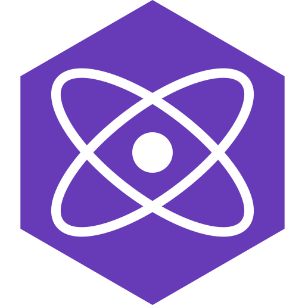

My Focus
 originChats - Decentralised discord alternative
originChats - Decentralised discord alternative
 Rotur - An ecosystem as a service
Rotur - An ecosystem as a service
Cool stuff I'm involved in
 Warpdrive - Indie console made for TurboWarp
Warpdrive - Indie console made for TurboWarp
 Cloudlink - Real-time P2P connectivity suite for Scratch 3 projects.
Cloudlink - Real-time P2P connectivity suite for Scratch 3 projects.
I use
Languages
OSL
Frameworks & Tools

Preact MistWarp
MistWarp
Editor & Environment
Fun stuff
- Extensions – scratch / originOS helper extensions. Browse
- RTR – portable & customisable language that can be modified and extended easily. Docs
- raingoer – simplistic interpreted language that runs on Go. GitHub
- roturGIT – forgejo fork for the rotur ecosystem. Checkout
- Appsie - simple app store for rotur, written in OSL.go GitHub
- RSH – simple flexible terminal spec. GitHub
- Claw – social platform without an algorithm. Docs
- opal – a package manager for OSL GitHub
- ICN – vector icon rendering language. Docs
- RDF – typed data storage format. GitHub
- roturLink – local system bridge + CORS proxy. GitHub
- mistysIDBwrapper – friendly IndexedDB wrapper. GitHub
- mist.js – tiny collection of JS utilities. GitHub